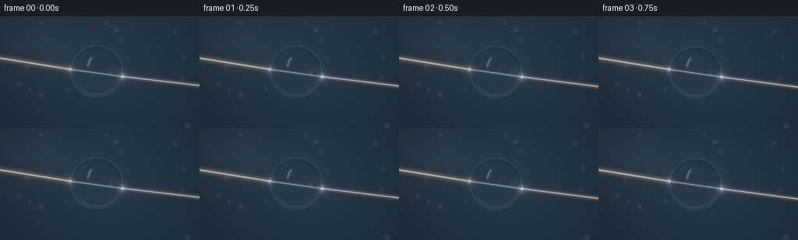
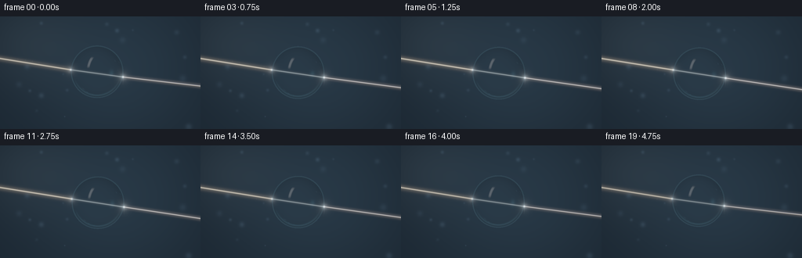
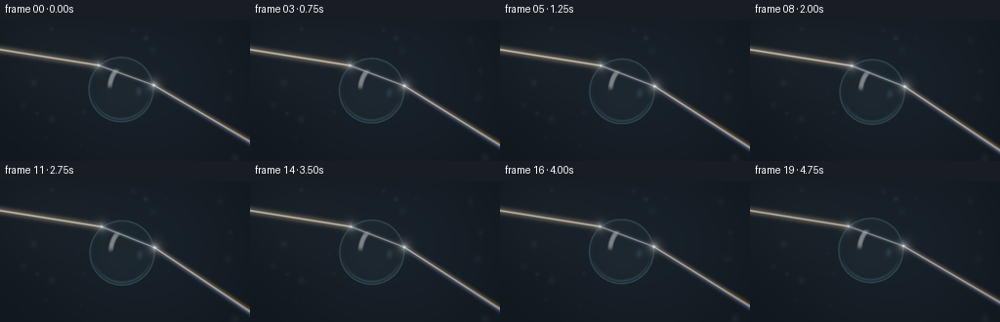

CODING AGENTS AS PIXEL WORLD MODELS
traex/GPT-6.1-Sol · phygen_088
点击播放 · 原生 RGB 像素
逐轮保存的候选
回放视频、检查图与代码变化。
每份候选均可单独播放。实际图片检查记录在下方工具轨迹中。
候选 01播放与检查图
点击播放 · 原生 RGB 像素


展开代码变化
--- 上一保存版本
+++ 本次保存版本
@@ -0,0 +1,161 @@
+from pathlib import Path
+import numpy as np
+from PIL import Image
+import artifact_io
+
+ROOT=Path(__file__).resolve().parent
+W,H=256,144
+S=3
+Y,X=np.mgrid[0:H*S,0:W*S].astype(np.float64)
+X=(X+.5)/S; Y=(Y+.5)/S
+rng=np.random.default_rng(88)
+# A very restrained atmospheric field: photographed light, not an illustrated grid.
+bokeh=[]
+for _ in range(17):
+ bokeh.append((rng.uniform(0,256),rng.uniform(0,144),rng.uniform(.5,3.0),rng.uniform(.008,.035)))
+
+def background(x,y):
+ x,y=np.broadcast_arrays(x,y)
+ f=np.zeros(x.shape+(3,),float)
+ f[:]=[.005,.011,.019]
+ glow=np.exp(-((x-145)/118)**2-((y-65)/105)**2)
+ f+=glow[...,None]*[.007,.015,.023]
+ g=np.exp(-((x-37)/64)**2-((y-34)/53)**2)
+ f+=g[...,None]*[.006,.009,.011]
+ for bx,by,sz,a in bokeh:
+ blob=np.exp(-((x-bx)**2+(y-by)**2)/(2*sz**2))
+ f+=blob[...,None]*np.array([.35,.65,1.])*a
+ return f
+
+
+def unit(v):
+ return v/np.linalg.norm(v,axis=-1,keepdims=True)
+
+def refract(d,n,eta):
+ c=-np.sum(d*n,axis=-1)
+ k=np.maximum(0,1-eta*eta*(1-c*c))
+ return eta*d+(eta*c-np.sqrt(k))[...,None]*n
+
+
+def beam_path(cx,cy,r,index,offset=0):
+ # Rays are traced, including both refracting interfaces, using Snell's law.
+ d=unit(np.array([1.,.16]))
+ start=np.array([-30.,49.+offset])
+ c=np.array([cx,cy])
+ oc=start-c
+ t=-np.dot(oc,d)-np.sqrt(np.dot(oc,d)**2-np.dot(oc,oc)+r*r)
+ p=start+t*d
+ n=(p-c)/r
+ di=refract(d,n,1/index)
+ p2=p-2*np.dot(p-c,di)*di
+ n2=-(p2-c)/r
+ dout=refract(di,n2,index)
+ return start,p,p2,p2+dout*190
+
+
+def add_ray(im,a,b,col,width,strength=1.,halo=2.5,cutoff=True):
+ v=b-a
+ t=((X-a[0])*v[0]+(Y-a[1])*v[1])/np.dot(v,v)
+ tt=np.clip(t,0,1)
+ dist2=(X-a[0]-tt*v[0])**2+(Y-a[1]-tt*v[1])**2
+ # Two exposures of one beam: a bright slender core and scattered light.
+ val=np.exp(-dist2/(2*width**2))*.55+np.exp(-dist2/(2*halo**2))*.075
+ if cutoff:
+ val*=((t>=0)&(t<=1))
+ im+=val[...,None]*np.array(col)*strength
+
+
+def glow(im,p,col,amplitude=1.0):
+ ds=(X-p[0])**2+(Y-p[1])**2
+ val=np.exp(-ds/1.3)*.58+np.exp(-ds/12)*.11+np.exp(-ds/55)*.027
+ im+=val[...,None]*np.array(col)*amplitude
+
+
+def render(t):
+ cx=124+1.15*np.sin(t*.7)
+ cy=71.5+1.8*np.sin(t*.85-.4)
+ r=33.7+.12*np.sin(t*1.2)
+ im=background(X,Y)
+ # A continuous white beam impinges slightly above the centre, and is bent
+ # toward the normal inside the sphere. The droplet's motion shifts the exit.
+ path=beam_path(cx,cy,r,1.337)
+ power=.90+.10*np.sin(t*.8+.3)
+ add_ray(im,path[0],path[1],[1.,.88,.68],.48,power,2.2)
+ # Natural small wavelength separation at the exit -- no fictitious huge fan.
+ colors=[([1.,.16,.035],1.331),([1.,.63,.075],1.333),([.32,1.,.25],1.336),([.045,.53,1.],1.341),([.30,.15,1.],1.346)]
+ for col,n in colors:
+ p=beam_path(cx,cy,r,n)
+ add_ray(im,p[2],p[3],col,.34,power*.37,1.7)
+
+ # Analytic orthographic ray tracing through a spherical volume of water.
+ nx=(X-cx)/r; ny=(Y-cy)/r
+ rr=nx*nx+ny*ny
+ inside=rr<1
+ zz=np.sqrt(np.maximum(0,1-rr))
+ normals=np.stack([nx,ny,-zz],axis=-1)
+ D=np.zeros_like(normals); D[...,2]=1
+ T=refract(D,normals,1/1.337)
+ P=normals*r
+ P2=P-2*np.sum(P*T,axis=-1)[...,None]*T
+ N2=-P2/r
+ Tout=refract(T,N2,1.337)
+ # Refracted view of the distant, dim studio atmosphere.
+ travel=(120-P2[...,2])/np.maximum(Tout[...,2],.06)
+ envx=cx+P2[...,0]+Tout[...,0]*travel
+ envy=cy+P2[...,1]+Tout[...,1]*travel
+ transmitted=background(envx,envy)*.88
+ transmitted+=np.stack([zz*.002,zz*.004,zz*.006],axis=-1)
+ reflect=D-2*np.sum(D*normals,axis=-1)[...,None]*normals
+ reflected=np.zeros_like(im)+[.024,.05,.075]
+ reflected+=(np.maximum(0,-reflect[...,1])**3)[...,None]*[.033,.052,.070]
+ # Large reflected softbox at upper left, plus a cool edge light.
+ light=unit(np.array([-.5,-.65,-.58]))
+ u=unit(np.cross(light,np.array([0.,1.,0.])))
+ v=np.cross(light,u)
+ ru=np.sum(reflect*u,axis=-1); rv=np.sum(reflect*v,axis=-1)
+ facing=np.sum(reflect*light,axis=-1)>0
+ soft=np.exp(-((ru/.095)**4+(rv/.37)**6))*facing
+ reflected+=soft[...,None]*[3.2,3.45,3.6]
+ light2=unit(np.array([.91,.10,-.40]))
+ cosine=np.sum(reflect*light2,axis=-1)
+ side=np.exp(-(1-cosine)/.020)
+ reflected+=side[...,None]*[.35,.95,1.35]
+ fresnel=.0204+.9796*(1-zz)**5
+ water=(1-fresnel[...,None])*transmitted+fresnel[...,None]*reflected
+ # Weak internally reflected light captures the smooth water surface shape.
+ edge=np.exp(-((np.sqrt(rr)-.973)/.015)**2)
+ water+=edge[...,None]*[.009,.023,.031]
+ # Back surface caustic arc, restrained and cool, near lower edge.
+ lower=np.exp(-((np.sqrt(rr)-.895)/.032)**2)*np.clip((ny-.24)*1.5,0,1)
+ water+=lower[...,None]*[.009,.024,.032]
+ im[inside]=water[inside]
+ # Scattered beam inside the otherwise clear water: the bend is plainly visible.
+ interior=np.zeros_like(im)
+ for offset in np.linspace(-.45,.45,5):
+ pp=beam_path(cx,cy,r,1.337,offset)
+ add_ray(interior,pp[1],pp[2],[.80,.95,1.],.30,power*.115,1.2)
+ im[inside]+=interior[inside]
+ glow(im,path[1],[.82,.93,1.],power*.9)
+ glow(im,path[2],[.8,.93,1.],power*1.25)
+ # Subtle diffraction spikes on the exit glint, barely a few pixels long.
+ p=path[2]
+ ds=(X-p[0])**2+(Y-p[1])**2
+ star=np.exp(-ds/28)*(np.exp(-((Y-p[1])/.16)**2)+np.exp(-((X-p[0])/.16)**2))
+ im+=star[...,None]*[.11,.15,.17]
+ # Very faint suspended aerosols illuminated only near the incident ray.
+ for i in range(8):
+ px=12+i*9.7+1.3*np.sin(t*.6+i)
+ py=49+.16*(px+30)+rng_offsets[i]+.35*t
+ ds=(X-px)**2+(Y-py)**2
+ im+=np.exp(-ds/.14)[...,None]*[.030,.029,.026]
+ # Filmic exposure and antialiasing.
+ im=np.maximum(im,0)
+ im=1-np.exp(-im*1.45)
+ im=np.power(im,1/2.2)
+ out=Image.fromarray(np.uint8(np.clip(im*255,0,255)))
+ return np.asarray(out.resize((W,H),Image.Resampling.LANCZOS))
+
+rng_offsets=rng.uniform(-4,4,8)
+frames=np.stack([render(i/4) for i in range(20)])
+artifact_io.save(frames,ROOT)
+print('Saved',frames.shape,'RGB frames to',ROOT)
候选 02播放与检查图
点击播放 · 原生 RGB 像素

展开代码变化
--- 上一保存版本
+++ 本次保存版本
@@ -25,7 +25,7 @@
for bx,by,sz,a in bokeh:
blob=np.exp(-((x-bx)**2+(y-by)**2)/(2*sz**2))
f+=blob[...,None]*np.array([.35,.65,1.])*a
- return f
+ return f*.30
def unit(v):
@@ -40,7 +40,7 @@
def beam_path(cx,cy,r,index,offset=0):
# Rays are traced, including both refracting interfaces, using Snell's law.
d=unit(np.array([1.,.16]))
- start=np.array([-30.,49.+offset])
+ start=np.array([-30.,25.+offset])
c=np.array([cx,cy])
oc=start-c
t=-np.dot(oc,d)-np.sqrt(np.dot(oc,d)**2-np.dot(oc,oc)+r*r)
@@ -114,8 +114,8 @@
v=np.cross(light,u)
ru=np.sum(reflect*u,axis=-1); rv=np.sum(reflect*v,axis=-1)
facing=np.sum(reflect*light,axis=-1)>0
- soft=np.exp(-((ru/.095)**4+(rv/.37)**6))*facing
- reflected+=soft[...,None]*[3.2,3.45,3.6]
+ soft=np.exp(-((ru/.14)**4+(rv/.50)**6))*facing
+ reflected+=soft[...,None]*[8.,8.6,9.]
light2=unit(np.array([.91,.10,-.40]))
cosine=np.sum(reflect*light2,axis=-1)
side=np.exp(-(1-cosine)/.020)
@@ -145,7 +145,7 @@
# Very faint suspended aerosols illuminated only near the incident ray.
for i in range(8):
px=12+i*9.7+1.3*np.sin(t*.6+i)
- py=49+.16*(px+30)+rng_offsets[i]+.35*t
+ py=25+.16*(px+30)+rng_offsets[i]+.35*t
ds=(X-px)**2+(Y-py)**2
im+=np.exp(-ds/.14)[...,None]*[.030,.029,.026]
# Filmic exposure and antialiasing.
候选 03播放与检查图

可观测工具轨迹
实际执行的命令与返回图片。
命令 1exit 0
/bin/bash -lc 'ls -la; cat prompt.txt; cat GENERATION_RULES.md; cat task_spec.json'
命令 2exit 0
/bin/bash -lc 'cat artifact_io.py'
命令 3exit 0
/bin/bash -lc "cat > generate.py <<'PY'
from pathlib import Path
import numpy as np
from PIL import Image
import artifact_io
ROOT=Path(__file__).resolve().parent
W,H=256,144
S=3
Y,X=np.mgrid[0:H*S,0:W*S].astype(np.float64)
X=(X+.5)/S; Y=(Y+.5)/S
rng=np.random.default_rng(88)
# A very restrained atmospheric field: photographed light, not an illustrated grid.
bokeh=[]
for _ in range(17):
bokeh.append((rng.uniform(0,256),rng.uniform(0,144),rng.uniform(.5,3.0),rng.uniform(.008,.035)))
def background(x,y):
x,y=np.broadcast_arrays(x,y)
f=np.zeros(x.shape+(3,),float)
f[:]=[.005,.011,.019]
glow=np.exp(-((x-145)/118)**2-((y-65)/105)**2)
f+=glow[...,None]*[.007,.015,.023]
g=np.exp(-((x-37)/64)**2-((y-34)/53)**2)
f+=g[...,None]*[.006,.009,.011]
for bx,by,sz,a in bokeh:
blob=np.exp(-((x-bx)**2+(y-by)**2)/(2*sz**2))
f+=blob[...,None]*np.array([.35,.65,1.])*a
return f
def unit(v):
return v/np.linalg.norm(v,axis=-1,keepdims=True)
def refract(d,n,eta):
c=-np.sum(d*n,axis=-1)
k=np.maximum(0,1-eta*eta*(1-c*c))
return eta*d+(eta*c-np.sqrt(k))[...,None]*n
def beam_path(cx,cy,r,index,offset=0):
# Rays are traced, including both refracting interfaces, using Snell's law.
d=unit(np.array([1.,.16]))
start=np.array([-30.,49.+offset])
c=np.array([cx,cy])
oc=start-c
t=-np.dot(oc,d)-np.sqrt(np.dot(oc,d)**2-np.dot(oc,oc)+r*r)
p=start+t*d
n=(p-c)/r
di=refract(d,n,1/index)
p2=p-2*np.dot(p-c,di)*di
n2=-(p2-c)/r
dout=refract(di,n2,index)
return start,p,p2,p2+dout*190
def add_ray(im,a,b,col,width,strength=1.,halo=2.5,cutoff=True):
v=b-a
t=((X-a[0])*v[0]+(Y-a[1])*v[1])/np.dot(v,v)
tt=np.clip(t,0,1)
dist2=(X-a[0]-tt*v[0])**2+(Y-a[1]-tt*v[1])**2
# Two exposures of one beam: a bright slender core and scattered light.
val=np.exp(-dist2/(2*width**2))*.55+np.exp(-dist2/(2*halo**2))*.075
if cutoff:
val*=((t>=0)&(t<=1))
im+=val[...,None]*np.array(col)*strength
def glow(im,p,col,amplitude=1.0):
ds=(X-p[0])**2+(Y-p[1])**2
val=np.exp(-ds/1.3)*.58+np.exp(-ds/12)*.11+np.exp(-ds/55)*.027
im+=val[...,None]*np.array(col)*amplitude
def render(t):
cx=124+1.15*np.sin(t*.7)
cy=71.5+1.8*np.sin(t*.85-.4)
r=33.7+.12*np.sin(t*1.2)
im=background(X,Y)
# A continuous white beam impinges slightly above the centre, and is bent
# toward the normal inside the sphere. The droplet's motion shifts the exit.
path=beam_path(cx,cy,r,1.337)
power=.90+.10*np.sin(t*.8+.3)
add_ray(im,path[0],path[1],[1.,.88,.68],.48,power,2.2)
# Natural small wavelength separation at the exit -- no fictitious huge fan.
colors=[([1.,.16,.035],1.331),([1.,.63,.075],1.333),([.32,1.,.25],1.336),([.045,.53,1.],1.341),([.30,.15,1.],1.346)]
for col,n in colors:
p=beam_path(cx,cy,r,n)
add_ray(im,p[2],p[3],col,.34,power*.37,1.7)
# Analytic orthographic ray tracing through a spherical volume of water.
nx=(X-cx)/r; ny=(Y-cy)/r
rr=nx*nx+ny*ny
inside=rr<1
zz=np.sqrt(np.maximum(0,1-rr))
normals=np.stack([nx,ny,-zz],axis=-1)
D=np.zeros_like(normals); D[...,2]=1
T=refract(D,normals,1/1.337)
P=normals*r
P2=P-2*np.sum(P*T,axis=-1)[...,None]*T
N2=-P2/r
Tout=refract(T,N2,1.337)
# Refracted view of the distant, dim studio atmosphere.
travel=(120-P2[...,2])/np.maximum(Tout[...,2],.06)
envx=cx+P2[...,0]+Tout[...,0]*travel
envy=cy+P2[...,1]+Tout[...,1]*travel
transmitted=background(envx,envy)*.88
transmitted+=np.stack([zz*.002,zz*.004,zz*.006],axis=-1)
reflect=D-2*np.sum(D*normals,axis=-1)[...,None]*normals
reflected=np.zeros_like(im)+[.024,.05,.075]
reflected+=(np.maximum(0,-reflect[...,1])**3)[...,None]*[.033,.052,.070]
# Large reflected softbox at upper left, plus a cool edge light.
light=unit(np.array([-.5,-.65,-.58]))
u=unit(np.cross(light,np.array([0.,1.,0.])))
v=np.cross(light,u)
ru=np.sum(reflect*u,axis=-1); rv=np.sum(reflect*v,axis=-1)
facing=np.sum(reflect*light,axis=-1)>0
soft=np.exp(-((ru/.095)**4+(rv/.37)**6))*facing
reflected+=soft[...,None]*[3.2,3.45,3.6]
light2=unit(np.array([.91,.10,-.40]))
cosine=np.sum(reflect*light2,axis=-1)
side=np.exp(-(1-cosine)/.020)
reflected+=side[...,None]*[.35,.95,1.35]
fresnel=.0204+.9796*(1-zz)**5
water=(1-fresnel[...,None])*transmitted+fresnel[...,None]*reflected
# Weak internally reflected light captures the smooth water surface shape.
edge=np.exp(-((np.sqrt(rr)-.973)/.015)**2)
water+=edge[...,None]*[.009,.023,.031]
# Back surface caustic arc, restrained and cool, near lower edge.
lower=np.exp(-((np.sqrt(rr)-.895)/.032)**2)*np.clip((ny-.24)*1.5,0,1)
water+=lower[...,None]*[.009,.024,.032]
im[inside]=water[inside]
# Scattered beam inside the otherwise clear water: the bend is plainly visible.
interior=np.zeros_like(im)
for offset in np.linspace(-.45,.45,5):
pp=beam_path(cx,cy,r,1.337,offset)
add_ray(interior,pp[1],pp[2],[.80,.95,1.],.30,power*.115,1.2)
im[inside]+=interior[inside]
glow(im,path[1],[.82,.93,1.],power*.9)
glow(im,path[2],[.8,.93,1.],power*1.25)
# Subtle diffraction spikes on the exit glint, barely a few pixels long.
p=path[2]
ds=(X-p[0])**2+(Y-p[1])**2
star=np.exp(-ds/28)*(np.exp(-((Y-p[1])/.16)**2)+np.exp(-((X-p[0])/.16)**2))
im+=star[...,None]*[.11,.15,.17]
# Very faint suspended aerosols illuminated only near the incident ray.
for i in range(8):
px=12+i*9.7+1.3*np.sin(t*.6+i)
py=49+.16*(px+30)+rng_offsets[i]+.35*t
ds=(X-px)**2+(Y-py)**2
im+=np.exp(-ds/.14)[...,None]*[.030,.029,.026]
# Filmic exposure and antialiasing.
im=np.maximum(im,0)
im=1-np.exp(-im*1.45)
im=np.power(im,1/2.2)
out=Image.fromarray(np.uint8(np.clip(im*255,0,255)))
return np.asarray(out.resize((W,H),Image.Resampling.LANCZOS))
rng_offsets=rng.uniform(-4,4,8)
frames=np.stack([render(i/4) for i in range(20)])
artifact_io.save(frames,ROOT)
print('Saved',frames.shape,'RGB frames to',ROOT)
PY
python generate.py"命令 4exit 0
/bin/bash -lc "python - <<'PY'
p='generate.py'
s=open(p).read().replace('return f\\n','return f*.30\\n').replace('49.+offset','25.+offset').replace('ru/.095','ru/.14').replace('rv/.37','rv/.50').replace('[3.2,3.45,3.6]','[8.,8.6,9.]').replace(\"py=49+.16*(px+30)\",\"py=25+.16*(px+30)\")
open(p,'w').write(s)
PY
python generate.py"视觉工具实际返回图片 1

视觉工具实际返回图片 2

保存候选 3 份；完成命令 4 次；可验证图片返回 2 张。原始 API 响应与完整日志保留在本地。